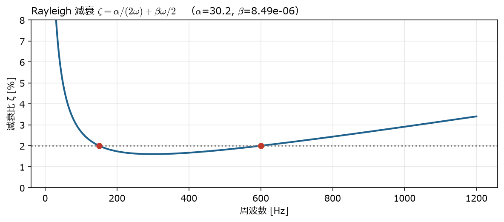
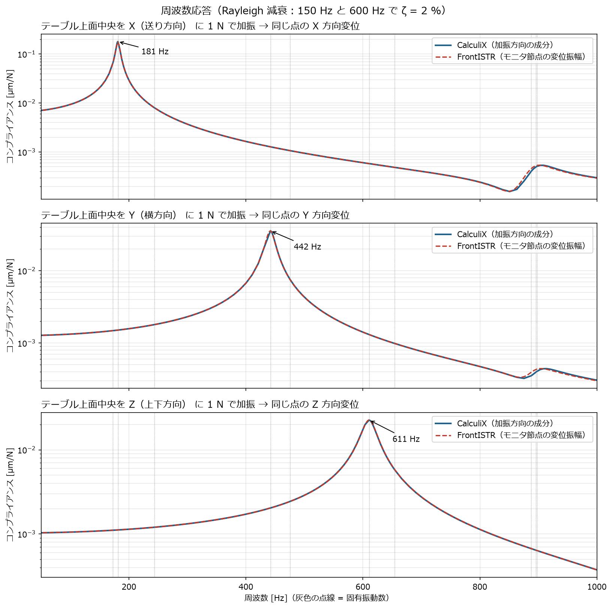
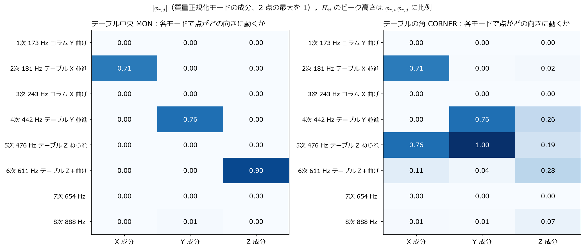
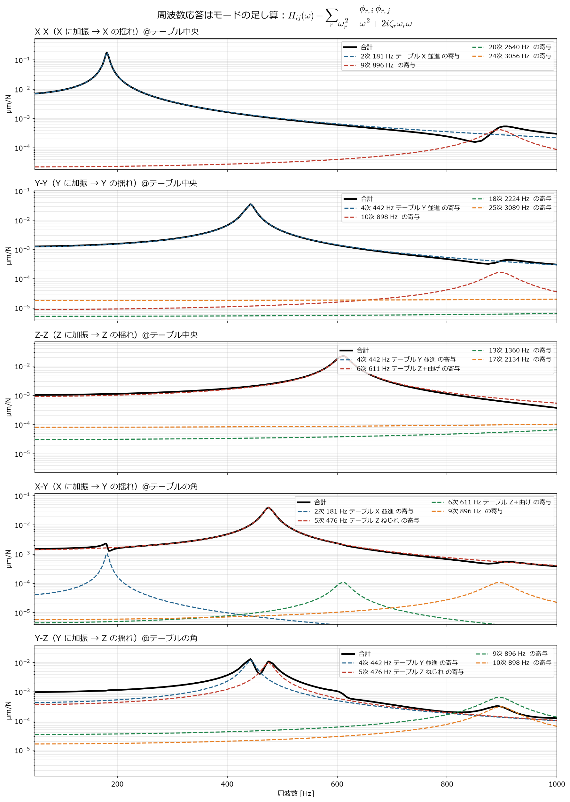
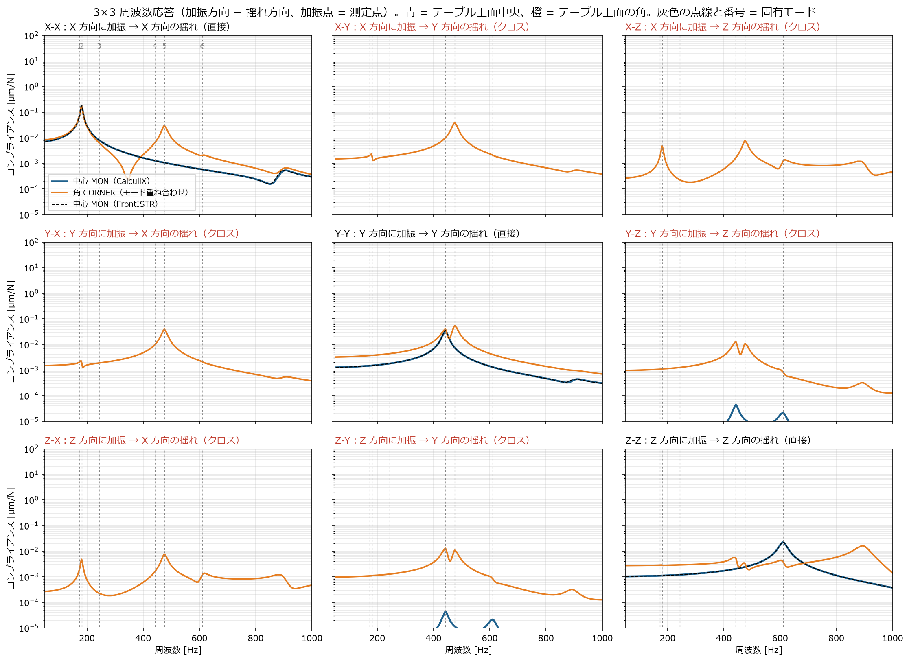

← docs 目次 ｜ ⌂ トップ ｜ ← 前: ana001 簡易工作機械の固有値解析 ｜ 次: ana003 代表点MPCばねの比較 →
作成: 2026-11-07 解析フォルダ: analysis/ana002_ccx_fistr_frf
| 項目 | 内容 |
|---|---|
| モデル | ana001 と同じ（分布ばね） |
| 解き方 | モード重ね合わせ法：先に固有値解析で 30 モードを求め、その足し合わせで応答を計算 |
| 加振 | テーブル上面中央（節点 20428）に 1 N の正弦波の力。X・Y・Z の 3 通り |
| 出力 | 同じ点の変位振幅（＝コンプライアンス [µm/N]） |
| 周波数 | 50〜1000 Hz |
| 減衰 | Rayleigh 減衰。150 Hz と 600 Hz で減衰比 \(\zeta\) = 2 % になるように \(\alpha\) = 30.16、\(\beta\) = 8.49 × 10⁻⁶ |
減衰を Rayleigh にしたのは、FrontISTR の周波数応答が Rayleigh 減衰しか入れられないため（CalculiX はモード減衰比を直接入れることもできる）。
\[\zeta(\omega) = \frac{\alpha}{2\omega} + \frac{\beta\,\omega}{2}\]

150〜600 Hz の間は 2 % よりやや小さく、外側では大きくなる。
ana001 のファイルの後ろに、加振方向ごとのステップを 3 つ追加している。
*STEP
*FREQUENCY, STORAGE=YES ← ① 固有値解析（30 モード）。STORAGE=YES で結果を保存
30
*END STEP
*STEP
*STEADY STATE DYNAMICS ← ② 定常応答（モード重ね合わせ）
50., 1000., 20, 1.0 ← 下限, 上限 [Hz], 固有振動数の間ごとの計算点数, 点の偏り
*MODAL DAMPING, RAYLEIGH ← Rayleigh 減衰
,,3.015929e+01,8.488264e-06 ← (空), (空), α, β
*CLOAD
MON, 1, 1.0 ← 加振点 MON の X 方向に 1 N
*NODE PRINT, NSET=MON ← MON の変位を .dat に出力（周波数ごとに実部と虚部）
U
*END STEP
（Y, Z 方向も同様に *CLOAD だけ変えたステップが続く）先に固有値解析（ana001 と同じ形の cnt）を流し、ログ
0.log を eigen_0.log に改名しておく。
次に、全体制御ファイルで固有値解析の結果を読み込む設定にして、周波数応答を流す。
!SOLUTION, TYPE=DYNAMIC
!DYNAMIC
11, 2 ← 2 = 周波数応答解析
50.0, 1000.0, 400, 50.0 ← 下限, 上限 [Hz], 計算点数, 変位分布を出力する周波数
0.0, 1.0 ← 時刻歴の可視化用（開始・終了時刻）
1, 1, 3.015929e+01, 8.488264e-06 ← 質量行列の種類, 減衰の種類(1=Rayleigh), α, β
1, 2, 20428 ← 出力点数, 可視化の種類, ★モニタする節点番号
1, 1, 1, 1, 1, 1 ← 変位・速度・加速度を出力するか
!EIGENREAD
eigen_0.log ← 固有値解析のログ（固有振動数をここから読む）
1, 30 ← 使うモード（1〜30）
!BOUNDARY
FIX, 1, 3, 0.0
!FLOAD, LOAD CASE=1 ← 加振力（LOAD CASE=1 が実部、2 が虚部）
MON, 1, 1.0 ← MON の X 方向に 1 N全体制御ファイル（hecmw_ctrl_freq_1.dat）には、固有値解析の結果ファイルを
!RESULT, NAME=result-in, IO=IN
で指定する（固有モードの形はここから読む）。
モニタ節点の応答は 0.log に「周波数 [Hz] :
変位振幅」の形で出る。
実行の流れは run.sh を参照。

| 加振方向 | 静剛性 [N/µm] | 最大ピーク | ピークのコンプライアンス [µm/N] | 動剛性の最小 [N/µm] |
|---|---|---|---|---|
| X（送り方向） | 141 | 181 Hz（2次：ボールねじ） | 0.180 | 6 |
| Y（横方向） | 782 | 442 Hz（4次：ガイド横） | 0.036 | 28 |
| Z（上下方向） | 968 | 611 Hz（6次：ガイド上下） | 0.023 | 44 |
切削力が 500 N で、その変動成分が 181 Hz 付近にあると、テーブルは送り方向に \(500 \times 0.18 = 90\) µm 程度ゆれる計算になる。 実際にはサーボ制御（位置ループ）が X 方向の剛性を補うので、この値より小さくなる。 制御を含めた評価は study/ref003 の 2 慣性モデルとつなげるのが次の段階。
コンプライアンス \(H\) は「1 N の力で何 µm 動くか」[µm/N]。剛性（N/µm）の逆数。 振動する力に対しては周波数ごとに値が変わり、これを動コンプライアンス（周波数応答関数、FRF）と呼ぶ。
\[H_{ij}(\omega) = \frac{u_j(\omega)}{F_i(\omega)} \quad \text{（}i\text{ 方向に加振して、}j\text{ 方向の揺れを測る）}\]
周波数応答は、ana001 で求めた固有モードの足し算で書ける（モード重ね合わせ。CalculiX・FrontISTR とも内部でこれを計算している）:
\[H_{ij}(\omega) = \sum_{r} \frac{\phi_{r,i}\,\phi_{r,j}}{\omega_r^2 - \omega^2 + 2i\,\zeta_r\,\omega_r\,\omega}\]
つまり「そのモードで、加振点が加振方向にも測定方向にも動くか」でピークが出るかが決まる。 CalculiX の結果から MON 点の \(\phi\) を取り出して足し算すると、CalculiX の周波数応答と相対誤差 \(10^{-5}\) 以下で一致した（post_cross.py）。


黒 = 合計、破線 = 各モードの寄与（大きい 4 つ）。生成スクリプト: post_cross.py
| ピーク | 原因のモード（アニメーション） |
|---|---|
| X-X 181 Hz | 2次：テーブルの X 並進（ボールねじ） |
| Y-Y 442 Hz | 4次：テーブルの Y 並進（ガイド横ばね） |
| Z-Z 611 Hz | 6次：テーブルの上下＋曲げ（ガイド上下ばね） |
| X-Y・Y-Y（角）476 Hz | 5次：テーブルの Z 軸まわりのねじれ |
加振方向 − 揺れ方向の 9 通り（X-X, X-Y, X-Z, Y-X, Y-Y, Y-Z, Z-X, Z-Y, Z-Z）を並べた。対角（X-X, Y-Y, Z-Z）が直接、それ以外がクロス。

青 = テーブル上面中央（MON、CalculiX の直接計算）、橙 = テーブル上面の角（750, 500, 350）（同じ固有モードからモード重ね合わせで計算）、黒破線 = FrontISTR（MON の振幅）
| 加振 − 揺れ | 50 Hz の値 [µm/N] | 最大ピーク [Hz] | ピーク値 [µm/N] | 主に効いているモード |
|---|---|---|---|---|
| X-X | 7.07e-03 | 181 | 1.80e-01 | 2次 181 Hz テーブル X 並進 |
| X-Y | 1.11e-15 | 181 | 3.34e-14 | ―（対称のため 0） |
| X-Z | 3.77e-16 | 181 | 1.02e-14 | ―（対称のため 0） |
| Y-X | 1.11e-15 | 181 | 3.34e-14 | ―（対称のため 0） |
| Y-Y | 1.28e-03 | 442 | 3.57e-02 | 4次 442 Hz テーブル Y 並進 |
| Y-Z | 6.80e-07 | 442 | 4.43e-05 | 4次 442 Hz テーブル Y 並進 |
| Z-X | 3.77e-16 | 181 | 1.02e-14 | ―（対称のため 0） |
| Z-Y | 6.80e-07 | 442 | 4.43e-05 | 4次 442 Hz テーブル Y 並進 |
| Z-Z | 1.03e-03 | 611 | 2.26e-02 | 6次 611 Hz テーブル Z＋曲げ |
| 加振 − 揺れ | 50 Hz の値 [µm/N] | 最大ピーク [Hz] | ピーク値 [µm/N] | 主に効いているモード |
|---|---|---|---|---|
| X-X | 8.24e-03 | 181 | 1.78e-01 | 2次 181 Hz テーブル X 並進 |
| X-Y | 1.50e-03 | 476 | 3.95e-02 | 5次 476 Hz テーブル Z ねじれ |
| X-Z | 2.65e-04 | 476 | 7.64e-03 | 5次 476 Hz テーブル Z ねじれ |
| Y-X | 1.50e-03 | 476 | 3.95e-02 | 5次 476 Hz テーブル Z ねじれ |
| Y-Y | 3.24e-03 | 476 | 5.44e-02 | 5次 476 Hz テーブル Z ねじれ |
| Y-Z | 9.71e-04 | 442 | 1.31e-02 | 4次 442 Hz テーブル Y 並進 |
| Z-X | 2.65e-04 | 476 | 7.64e-03 | 5次 476 Hz テーブル Z ねじれ |
| Z-Y | 9.71e-04 | 442 | 1.31e-02 | 4次 442 Hz テーブル Y 並進 |
| Z-Z | 2.74e-03 | 893 | 1.63e-02 | 9次 896 Hz |
読み方:
cd analysis/ana002_ccx_fistr_frf
./run.sh # 入力作成 → CalculiX → FrontISTR（固有値 → 周波数応答 × 3）
~/opt/venv/bin/python post.py # グラフと表
~/opt/venv/bin/python post_cross.py # 3×3（クロス）とモード寄与計算時間: 合計 約 3 分（CalculiX 2.5 分、FrontISTR 固有値 25 秒＋周波数応答 各 5 秒）。
← docs 目次 ｜ ⌂ トップ ｜ ← 前: ana001 簡易工作機械の固有値解析 ｜ 次: ana003 代表点MPCばねの比較 →